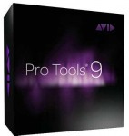
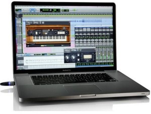

Pro Tools 9 is the latest version of Avid’s industry-standard digital audio workstation software. This new update effectively replaces Pro Tools LE by building off of the success of the 2008 Pro Tools 8 update.
What’s New in Avid Pro Tools 9
With Pro Tools 8 LE, Avid focused on improving music creation and audio production by way of a completely overhauled graphic user interface, the long-awaited addition of full MIDI implementation and a newly bundled suite of virtual instruments and plug-ins. With Pro Tools 9, Avid continues this trend of enhancing the creative process by rounding out the back end of the Pro Tools DAW with more tracks and busses, interface flexibility and many other workflow improvements.
Top Features of the New Pro Tools 9 DAW
Avid has finally made Pro Tools 9 hardware independent and thus compatible with third-party Core Audio- and ASIO-compatible audio interfaces. This feature offers increased flexibility for Pro Tool users who prefer operating non-Avid/Digidesign audio interfaces. These third-party interfaces sometimes cost less and offer the same, if not better A/D conversion and I/O options than are found on Avid’s MBox or 003 devices. Better still however, Pro Tools 9 now works with built-in sound cards – a HUGE plus for mobile musicians and audio engineers. The only caveat here is that Pro Tools 9 requires an iLok or iLok2 device to be installed while using the software.
With the exception of video tracks, Avid has dramatically increased all available track counts in Pro Tools 9. This latest version of Pro Tools now supports 32 tracks of simultaneous recording (up from 18 in Pro Tools LE). The total number of playback voices has been doubled from 48 to 96. The number of instrument tracks has also been doubled from 32 to 64. Following suit, the number of available internal busses has been increased from 32 to 256.
Rounding out the top features, Pro Tools 9 users can finally take advantage of Automatic Delay Compensation, multitrack Beat Detective and EUCON integration.
Avid Pro Tools 9 Pricing and Upgrades
The new Pro Tools 9 DAW includes some features which were separately priced add-ons to Pro Tools LE. File interchange between Pro Tools and other DAWs via OMF/AAF/MXF files traditionally required the Digitranslator add-on. This feature is now built into Pro Tools 9 along with the long overdue inclusion of MP3 exporting.
The standalone version of Pro Tools 9 costs $599 (iLok included) while Pro Tools LE users can crossgrade to Pro Tools 9 starting from $249 (iLok sold separately). Those users looking for surround sound and other advanced audio editing features have the option of upgrading to Avid’s Complete Production Toolkit 2.
The Best Version of Pro Tools So Far?
The renowned editing features of Pro Tools have made it the top DAW on the planet for over a decade. However the popularity of Pro Tools has arguably waned over the last few years. Other DAWs such as Cubase, Logic and Sonar have grown into versatile and powerful competitors by focusing on how to simplify and enhance audio creation and editing in the digital environment.
Avid has clearly taken note with this new version of Pro Tools by addressing many of the long-standing complaints by both critics and users of the Pro Tools DAW. Pro Tools 9 is far more inclusive than previous versions and exhibits Avid’s strong desire to maintain its position as the industry-standard in digital audio workstation software.


{kind=link}
{kind=link}
{kind=link}